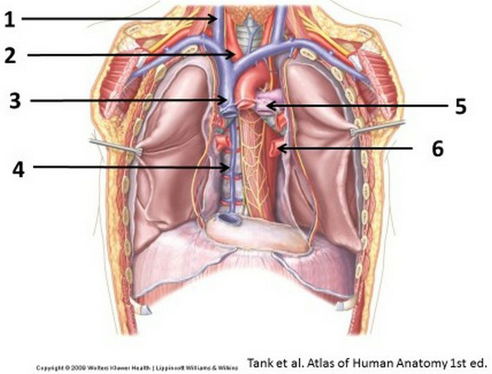
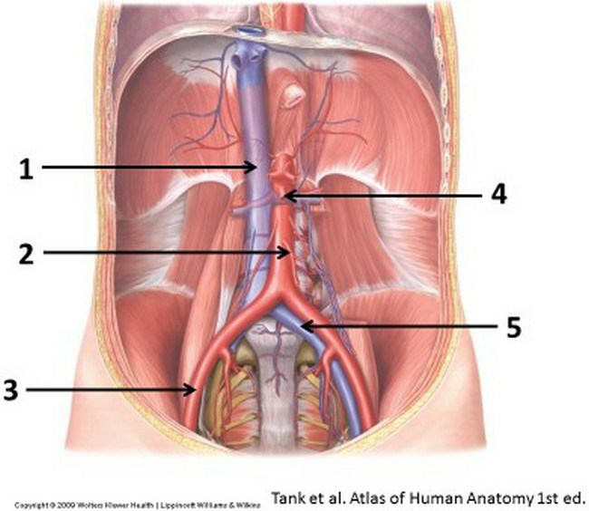
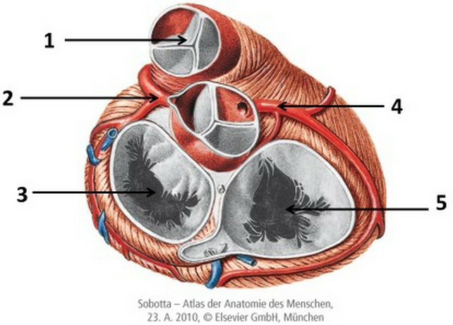
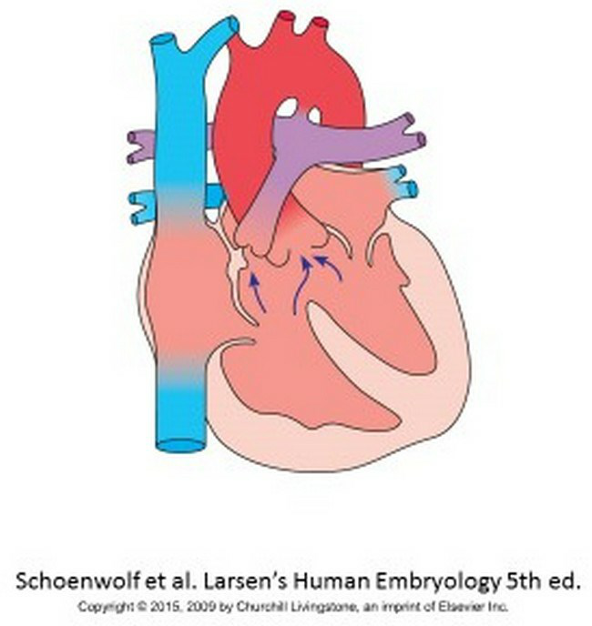
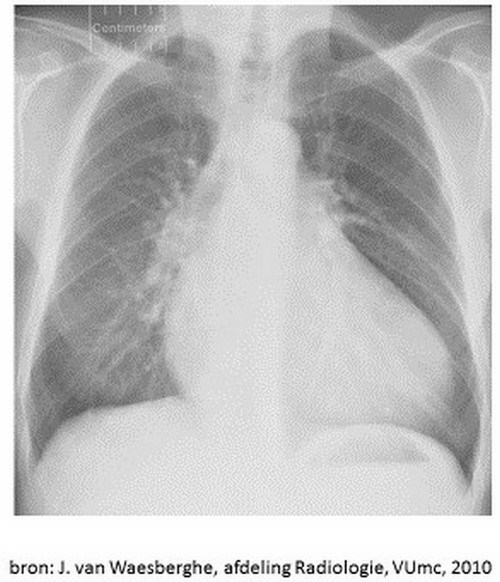
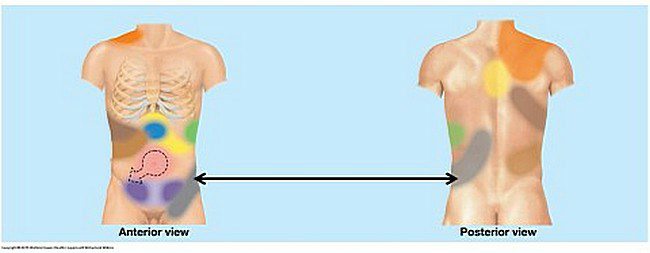

Vraag 1
Erythrocyten worden niet uitgescheiden in de nierlichaampjes.
Welke structuur in de nierlichaampjes is hier verantwoordelijk voor?
Welke structuur in de nierlichaampjes is hier verantwoordelijk voor?
Vraag 2
Welk type epitheel bekleedt de ureters?
Vraag 3
Ureum bevat twee NH2 groepen. Een daarvan is afkomstig van carbamoylfosfaat.
Van welk molecuul is de tweede NH2 groep afkomstig?
Van welk molecuul is de tweede NH2 groep afkomstig?
Vraag 4
In welk deel van de vaatwand treden de eerste pathologische veranderingen op in het proces van atherosclerose?
Vraag 5
Welke laag is het meest prominent aanwezig in elastische arteriën?
Vraag 6
Welk soort capillairen komt voornamelijk voor in het centrale zenuwstelsel?
Vraag 7
U loopt uw tweedejaarsstage bij de huisarts en voert het consult met een 22-jarige patiënt die met de klacht pijn op de borst is gekomen.
Welke van de volgende vragen maakt, bij een bevestigend antwoord, een paniekstoornis meer waarschijnlijk?
Welke van de volgende vragen maakt, bij een bevestigend antwoord, een paniekstoornis meer waarschijnlijk?
Vraag 8
U loopt uw tweedejaarsstage bij de huisarts en bent bij het consult met een 66-jarige patiënt met een blanco voorgeschiedenis. U observeert het volgende gespreksfragment:
Arts: “Wat kan ik voor u doen?”
Patiënt: “Dokter, ik heb last van pijn op mijn borst.”
Welke diagnose komt op dit moment, op basis van deze gegevens bovenaan uw differentiaal diagnose te staan?
Arts: “Wat kan ik voor u doen?”
Patiënt: “Dokter, ik heb last van pijn op mijn borst.”
Welke diagnose komt op dit moment, op basis van deze gegevens bovenaan uw differentiaal diagnose te staan?
Vraag 9
Atherosclerose is een langzaam voortschrijdende aandoening van de arteriën, waar je lange tijd niets van merkt (preklinische fase). Plaats de labels op de juiste plaats. De preklinische fase verloopt als een geleidelijke progressie; de klinische fase toont de mogelijke eindstadia (van links naar rechts in de afbeelding).
Sleep een optie naar de bijbehorende rij, of tik eerst op een kaart en dan op een rij.
Preklinische fase, positie 1 (beginsituatie)
Sleep hier naartoe
Preklinische fase, positie 2
Sleep hier naartoe
Preklinische fase, positie 3
Sleep hier naartoe
Preklinische fase, positie 4
Sleep hier naartoe
Klinische fase, uitkomst links
Sleep hier naartoe
Klinische fase, uitkomst midden
Sleep hier naartoe
Klinische fase, uitkomst rechts
Sleep hier naartoe
Vraag 10
Fasen van de hartcyclus. In de afbeelding worden de druk- en volumecurven van de linkerventrikel getoond. Plaats de begrippen bij het juiste witte kader (drukcurve bovenaan, volumecurve daaronder).
Sleep een optie naar de bijbehorende rij, of tik eerst op een kaart en dan op een rij.
Drukcurve, bovenste kader (hoogste druk, ~110 mmHg)
Sleep hier naartoe
Drukcurve, middelste kader (~50 mmHg)
Sleep hier naartoe
Drukcurve, onderste kader (laagste druk)
Sleep hier naartoe
Volumecurve, bovenste kader (~130 ml)
Sleep hier naartoe
Volumecurve, onderste kader (~65 ml)
Sleep hier naartoe
Vraag 11
De polsdruk is:
Vraag 12
Tijdens de actiepotentiaal in hartspierweefsel veranderen de permeabiliteiten van een aantal ionen.
Welke stelling is juist? Aan het eind van de actiepotentiaal neemt de…
Vraag 13
De tricuspidaalkleppen bevinden zich tussen:
Vraag 14
Na het sluiten van de aortaklep begint de:
Vraag 15

In de afbeelding ziet u een aantal bloedvaten. Welke bloedvaten worden aangegeven door de nummers 2, 3 en 5? Kies bij elk bloedvat het juiste nummer (of 'geen' als het bloedvat niet is aangegeven).
truncus brachiocephalicus
vena cava superior
truncus pulmonalis
vena jugularis
vena brachiocephalica
vena azygos
vena pulmonalis
Vraag 16

In de afbeelding ziet u een aantal bloedvaten. Plaats de bloedvaten 'a. mesenterica inferior', 'a. mesenterica superior' en 'v. iliaca communis' bij het juiste nummer. Kies bij elk nummer het juiste bloedvat (of 'geen').
Nummer 1
Nummer 2
Nummer 3
Nummer 4
Nummer 5
Vraag 17
De beide ureteren lopen schuin door de blaaswand heen.
Wat is de functie van deze schuine passage?
Wat is de functie van deze schuine passage?
Vraag 18
Welke aangeboren afwijking veroorzaakt een ‘natte navel’ bij een pasgeborene?
Vraag 19

Sleep de nummers 1, 2 en 5 naar de bijbehorende structuur. Kies bij elke structuur het juiste nummer (of 'geen').
valva aortae
valva trunci pulmonalis
a. coronaria dextra
a. coronaria sinistra
valva mitralis
valva tricuspidalis
Vraag 20
Welke aangeboren hartafwijking is hier afgebeeld?

Vraag 21
Welke drie structuren lopen door het diafragma?
Meerdere antwoorden mogelijk.
Vraag 22
Welke afwijking is te zien op de Röntgenfoto van de thorax?

Vraag 23
U ziet een gebied van gerefereerde pijn afgebeeld (pijl, grijs gebied).
Welk(e) orgaan of structuur veroorzaakt in het aangeduide gebied viscerale gerefereerde pijn?
Welk(e) orgaan of structuur veroorzaakt in het aangeduide gebied viscerale gerefereerde pijn?

Vraag 24
Bij een patiënt worden in het laboratorium de volgende waarden gemeten:
Plasma – Kreatinine: 70 µmol/l
24-uurs urine – Kreatinine: 5 mmol/l · Kreatinine: 10 mmol/24 u · Volume: 2000 ml
Plasma – Kreatinine: 70 µmol/l
24-uurs urine – Kreatinine: 5 mmol/l · Kreatinine: 10 mmol/24 u · Volume: 2000 ml
De kreatinineklaring is ongeveer:
Vraag 25
In observationele studies leven patiënten die een niertransplantatie ontvangen langer dan degenen die met dialyse worden behandeld. Niertransplantatie voordat dialyse noodzakelijk is lijkt nog beter te zijn dan eerst dialyseren en daarna een donornier ontvangen. Bij deze vergelijkingen kan er sprake zijn van bias (vertekening). Koppel elke vergelijking van patiëntengroepen aan de belangrijkste vorm van bias.
informatiebias
selectiebias
lead time bias
survivor bias
Vraag 26
In de ductus colligens wordt onder invloed van antidiuretisch hormoon water teruggeresorbeerd.
Welk geneesmiddel belemmert deze terugresorptie van water niet?
Welk geneesmiddel belemmert deze terugresorptie van water niet?
Vraag 27
Een patiënt heeft veel perifeer pitting oedeem aan de enkels en onderbenen. Het plasma-albuminegehalte is 18 g/l (ref. 35-52 g/l), met de urine verliest hij 6 g eiwit / 24 u (ref. < 0.3 g / 24 u).
Het ontstaan van het oedeem is meest waarschijnlijk te verklaren door:
Het ontstaan van het oedeem is meest waarschijnlijk te verklaren door:
Vraag 28
In welk deel van het nefron werkt triamterene?
Vraag 29
Bij een patiënt met hypertensie heeft u als werkdiagnose dat nierschade de oorzaak van de hypertensie is. U heeft inmiddels een angiotensine-converting-enzymeremmer voorgeschreven in hoge dosering. Desondanks is de bloeddruk onvoldoende gedaald.
Welke twee keuzes zijn logische vervolgstappen als medicamenteuze behandeling?
Meerdere antwoorden mogelijk.
Vraag 30
Welke situatie geeft de minste proteïnurie bij een patiënt met een bloeddruk van 160/90 mmHg en een nefrotisch syndroom?
Vraag 31
Welke bewering is juist t.a.v. een metabole acidose?
Vraag 32
Het menselijk lichaam is zeer zuinig op zijn cholesterol en bevat geen enzymen die het kunnen afbreken tot kleinere moleculen.
De voornaamste manier om een teveel aan cholesterol kwijt te raken is:
De voornaamste manier om een teveel aan cholesterol kwijt te raken is:
Vraag 33
Triglyceriden worden vervoerd door plasma lipoproteinen zoals VLDL.
Hun opname in vetcellen wordt bepaald door de volgende reactie:
Hun opname in vetcellen wordt bepaald door de volgende reactie:
Vraag 34
Het hart van een patiënt met diastolisch hartfalen kenmerkt zich door:
Vraag 35
U wilt met echocardiographie onderzoeken of de rechterventrikel vrije wand normaal contraheert bij de basis van het hart, dus nabij de hartkleppen.
Welk afbeeldingsvlak stelt u dan in?
Welk afbeeldingsvlak stelt u dan in?
Vraag 36
Met duplex-echo onderzoekt u of in de Art. carotis interna een stenose aanwezig is.
Kenmerk van een vernauwing is:
Kenmerk van een vernauwing is:
Vraag 37
Kies de juiste alternatieven.
Plaats de items in de juiste volgorde (route van glucose naar cholesterol): glucose → → → →
Vraag 38
Welke van de onderstaande biochemische processen wordt gestimuleerd door epinephrine?
Vraag 39
Glucose is een prima grondstof voor de productie van vetzuren via Acetyl-CoA.
Welk ander product, dat via de pentose fosfaat shunt (pentose phosphate pathway) van de glycolyse wordt gevormd, is essentieel voor deze synthese?
Welk ander product, dat via de pentose fosfaat shunt (pentose phosphate pathway) van de glycolyse wordt gevormd, is essentieel voor deze synthese?
Vraag 40
Een standaard electrocardiogram in de kliniek toont:
Vraag 41
Een oudere man is bekend met hartfalen. De bloeddruk is laag-normaal en er is veel oedeem.
Welke behandeling met diuretica is het meest effectief en heeft de minste kans op bijwerkingen?
Welke behandeling met diuretica is het meest effectief en heeft de minste kans op bijwerkingen?
Vraag 42
Bij de behandeling van hypertensie worden vaak verschillende antihypertensiva gecombineerd. Bij het combineren van twee antihypertensiva wordt bij voorkeur een combinatie gegeven van een rasblokkerend en een rasonafhankelijk middel vanwege het toegenomen effect.
Welke drie geneesmiddelen kun je toevoegen aan Chloorthalidon (=thiazidediureticum) zodat je een combinatie geeft van een rasblokkerend en een rasonafhankelijk middel?
Meerdere antwoorden mogelijk.
Vraag 43
De zogenaamde omega-3 of n-3 vetzuren zijn essentieel in de voeding omdat de mens ze niet zelf kan maken.
Zij vormen de grondstof voor de aanmaak van arachidonzuur, wat dient als basisstof voor de productie van:
Zij vormen de grondstof voor de aanmaak van arachidonzuur, wat dient als basisstof voor de productie van:
Vraag 44
Glycoproteinen spelen een belangrijke rol in de herkenning van lichaamsvreemde cellen door het immuunsysteem, bijvoorbeeld bij de bloedgroepherkenning.
Hoe doen ze dat?
Hoe doen ze dat?
Vraag 45
Pacemakercellen in de sinusknoop hebben een:
Vraag 46
Excitatie loopt als volgt over het hart:
Vraag 47
Wat is een belangrijke nevenwerking van ACE remmers?
Vraag 48
Casus Walsh (vraag 48, 49 en 50)
Patiënt Walsh komt bij zijn internist om het radiologisch onderzoek van zijn bovenbuik te bespreken. Er blijkt sprake te zijn van een afwijking in de buikstreek. Dit nieuws zorgt voor een paniekreactie bij de patiënt. De gedachtes en vragen van de patiënt gaan alle kanten op. In sneltreinvaart komen langs: ‘Ga ik snel dood?’, ‘Wat moeten mijn kinderen dan?’, ‘Is er een medicijn?’, ‘Waarom ik?’, ‘Wat moet ik?’, ‘Help!’.
Patiënt Walsh komt bij zijn internist om het radiologisch onderzoek van zijn bovenbuik te bespreken. Er blijkt sprake te zijn van een afwijking in de buikstreek. Dit nieuws zorgt voor een paniekreactie bij de patiënt. De gedachtes en vragen van de patiënt gaan alle kanten op. In sneltreinvaart komen langs: ‘Ga ik snel dood?’, ‘Wat moeten mijn kinderen dan?’, ‘Is er een medicijn?’, ‘Waarom ik?’, ‘Wat moet ik?’, ‘Help!’.
Volgens de ‘prestatie-emotie curve’ mogen we aannemen dat het ‘prestatieniveau’ van de patiënt momenteel:
Vraag 49
Casus Walsh (vraag 48, 49 en 50)
Patiënt Walsh komt bij zijn internist om het radiologisch onderzoek van zijn bovenbuik te bespreken. Er blijkt sprake te zijn van een afwijking in de buikstreek. Dit nieuws zorgt voor een paniekreactie bij de patiënt.
Patiënt Walsh komt bij zijn internist om het radiologisch onderzoek van zijn bovenbuik te bespreken. Er blijkt sprake te zijn van een afwijking in de buikstreek. Dit nieuws zorgt voor een paniekreactie bij de patiënt.
De internist signaleert de emoties van patiënt Walsh en zegt: ‘maakt u zich maar geen zorgen hoor; we hebben hier immers hele goede behandelingen voor!’.
Is dit een geschikte reactie van de arts?
Is dit een geschikte reactie van de arts?
Vraag 50
Casus Walsh (vraag 48, 49 en 50)
Patiënt Walsh komt bij zijn internist om het radiologisch onderzoek van zijn bovenbuik te bespreken. Er blijkt sprake te zijn van een afwijking in de buikstreek. Dit nieuws zorgt voor een paniekreactie bij de patiënt.
Patiënt Walsh komt bij zijn internist om het radiologisch onderzoek van zijn bovenbuik te bespreken. Er blijkt sprake te zijn van een afwijking in de buikstreek. Dit nieuws zorgt voor een paniekreactie bij de patiënt.
Gedurende het consult blijft patiënt geëmotioneerd overkomen op de internist en deze besluit de emoties van de patiënt ‘open te maken’.
Welke gesprekstechniek leent zich hier het beste voor?
Welke gesprekstechniek leent zich hier het beste voor?